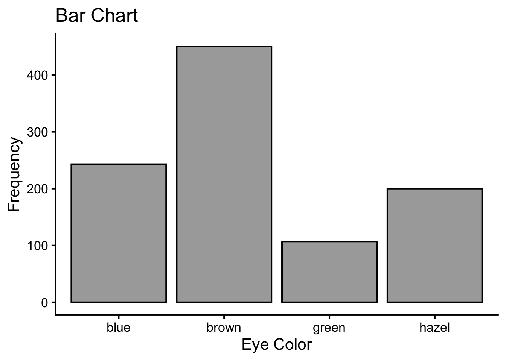
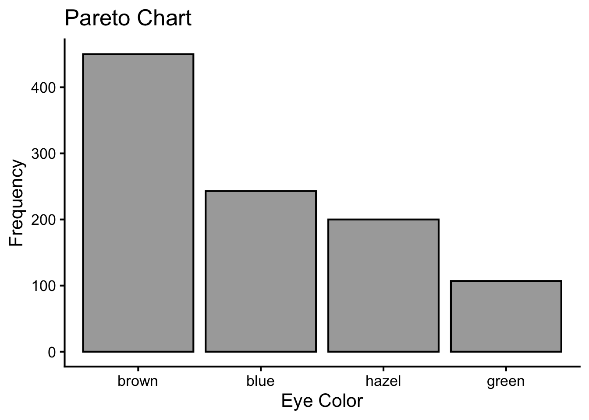
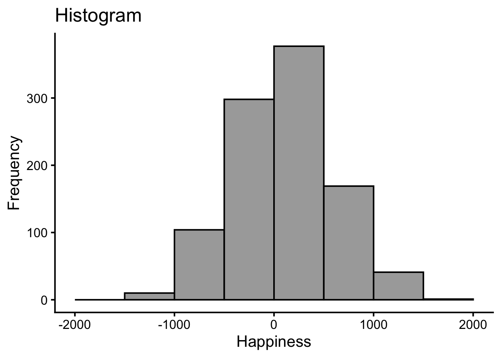
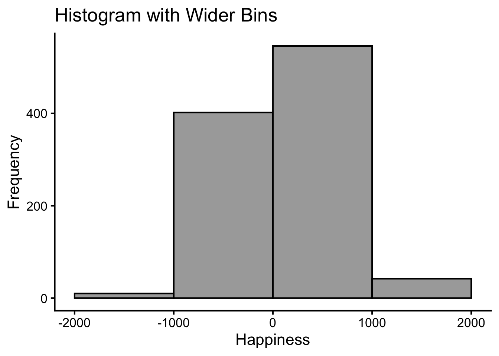
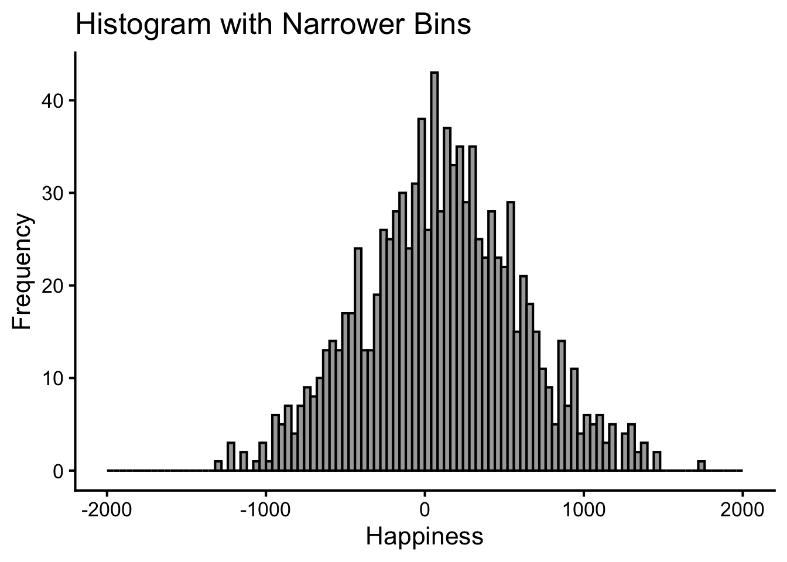
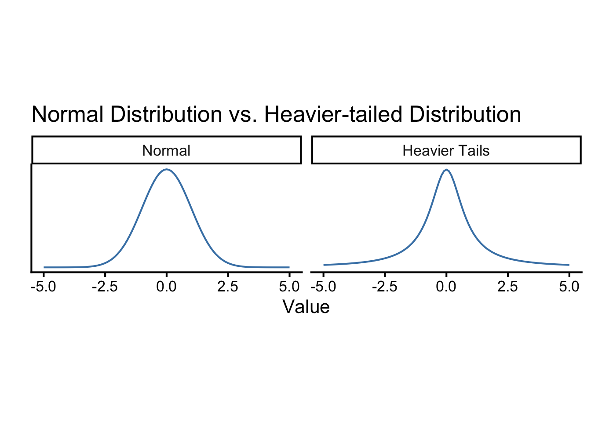
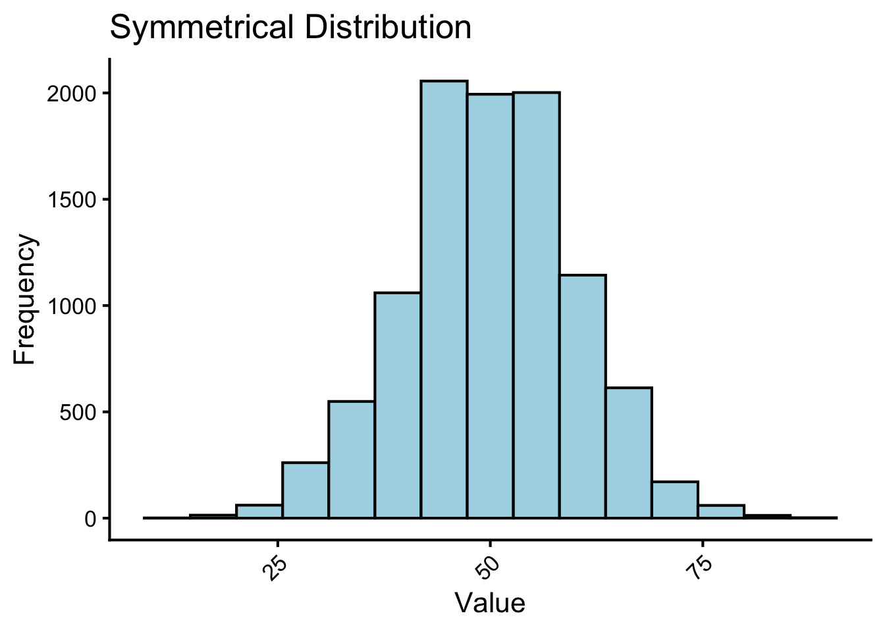
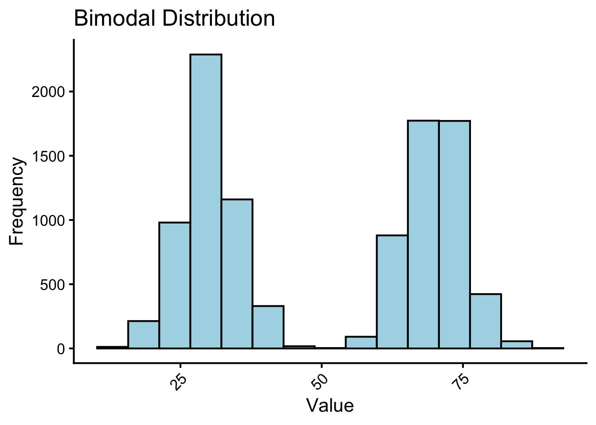
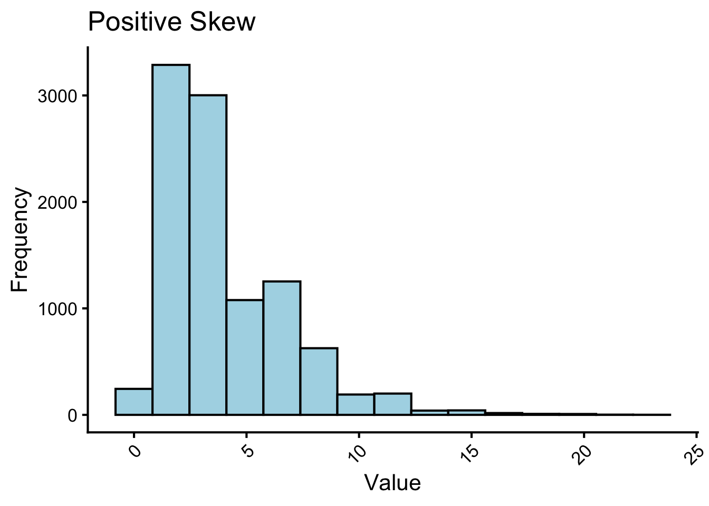
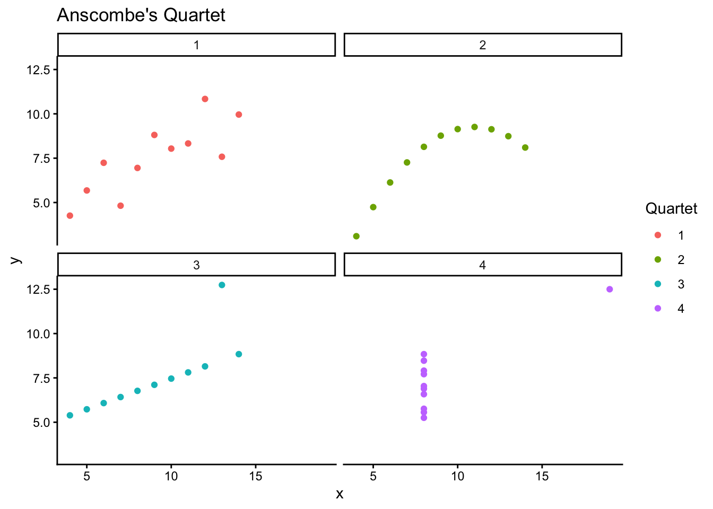

| EyeColor | Happiness |
|---|---|
| brown | -180.24 |
| brown | -15.09 |
| brown | 879.35 |
| blue | 135.25 |
| blue | 164.64 |
| blue | 957.53 |
Ch.4: Visualizing and Describing Data
4 Visualizing and Describing Data
Before we can understand our statistical analyses, we must first understand our data. Imagine you have a large pile of raw data. How do you find the big picture and make sense of it?
Descriptive statistics are a way to give big picture summaries of the data. These summaries “compress” the data down to a useful and manageable tidbit. It’s like telling your friends about a movie you just watched. You don’t replay the entire movie for them. Instead you hit the highlights. Summarizing the data is just like a movie highlights, only for data. There is more than one correct way to summarize the data, and you choose the most useful way for the data you are describing. Some of the common characteristics of the data that we want to summarize are: the typical values (central tendency), the spread (variability), and the shape of the distribution.
However, you may want to see the whole movie before you decide which highlights would be useful to show your friends. In the same way, we want to see the whole distribution of the data before we summarize it with descriptive statistics.
In this chapter, we will learn how to visualize the data to see the whole distribution and how to summarize them with descriptive statistics, for categorical and continuous data.
4.1 A Case of Categorical and Continuous Data
Let’s say you wanted to know if there is any relationship between what eye colors people have and how happy they are. So, you ask a thousand people on the street about their eye colors and how happy they are (any number they want from negative infinity to positive infinity1). Then you record their eye colors and happiness ratings. Table 1 shows the first six responses of the eye color and happiness data.
Before you can answer association questions, you need to first describe each variable. How you describe the data depends on the type of data you have: categorical (e.g., eye color) or continuous (e.g., happiness rating).
4.2 Categorical Data
For categorical data, the distribution shows how common each value is. For example, in the eye color data, we can see that there are four different eye colors: brown, blue, green, and hazel. We can tally how common each value is to find some patterns of the data. How distributed is the data? Are all eye colors equally common, or are some eye colors are more common than others? Are they any unusual eye colors?
Descriptive statistics provide a simpler summary. For a categorical variable, you can note the typical value, called the mode, which is the most common value. For example, in the eye color data, the mode is the most common eye color.
4.2.1 Distribution
4.2.1.1 Frequency Tables
In simple terms, frequency tables are just the tally of how often each value occurs in the data. For example, in Table 2 that shows eye colors in a sample of 100 people. They also show the relative frequencies or percentages (“percent” column in Table 2).
| EyeColor | n | percent |
|---|---|---|
| blue | 243 | 24% |
| brown | 450 | 45% |
| green | 107 | 11% |
| hazel | 200 | 20% |
| Total | 1000 | 100% |
This gives you a sense of the distribution of the data. For example, the most common eye color is brown, which makes up 45% of the sample. Remember that this is exactly what the mode is: the most common value.
However, you can get more details about the data from the distribution. For example, there are 243 people who has blue eyes, which makes up 24% of the sample, followed by 200 people with hazel eyes (20%) and 107 people with green eyes (11%). The least common eye color is green.
Note that there is only a minimal “compression” of the data in the frequency table. From the table, we can recreate the original data by repeating each response category according to its frequency. For example, we can recreate the original data by repeating “blue” 243 times, “brown” 450 times, and so on.
4.2.1.2 Bar Charts
While frequency tables are useful, it is often easier to see the distribution of the data in a graph. Bar charts represent the frequencies of categorical responses as the height of the bars. Because the levels are discrete (e.g., “blue”, “brown”, etc.), the bars are separated with some gaps between them. The height of the bar on the y-axis represents the frequency of that response category. Figure 1 shows the same data as in Table 2, but represented as a bar chart. It is easier to pick out the mode in the bar chart than in the table.
This chart has title 'Bar Chart'.
It has x-axis 'Eye Color' with labels blue, brown, green and hazel.
It has y-axis 'Frequency' with labels 0, 100, 200, 300 and 400.
The chart is a bar chart with 4 vertical bars.
Bar 1 is centered at 1, and length is from 0 to 243.
Bar 2 is centered at 2, and length is from 0 to 450.
Bar 3 is centered at 3, and length is from 0 to 107.
Bar 4 is centered at 4, and length is from 0 to 200.
It has fill set to light gray.
It has colour set to black.
This conveys exactly the same information as the frequency table, but it is easier to see how even or uneven the distribution is. Again, there is only a minimal compression of the data.
4.2.2 Pareto Charts
From the bar chart above, try to determine whether blue eyes are more common than hazel eyes. It is not easy to tell from the bar chart because the bars are not in order of frequency. A Pareto chart is a bar chart that orders the bars from most common to least common. This makes it easier to see the ranking of the frequencies. Figure 2 shows the Pareto chart for the eye color data.
This chart has title 'Pareto Chart'.
It has x-axis 'Eye Color' with labels brown, blue, hazel and green.
It has y-axis 'Frequency' with labels 0, 100, 200, 300 and 400.
The chart is a bar chart with 4 vertical bars.
Bar 1 is centered at 1, and length is from 0 to 450.
Bar 2 is centered at 2, and length is from 0 to 243.
Bar 3 is centered at 3, and length is from 0 to 200.
Bar 4 is centered at 4, and length is from 0 to 107.
It has fill set to light gray.
It has colour set to black.
4.3 Continuous Data
For continuous data, the distribution shows how common each range of values is. For example, in the happiness data, we can see how many people have happiness ratings between -100 and 0, between 0 and 100, and so on. We can tally how common each range of values is to find some patterns of the data. How distributed is the data? Are people similarly happy? Or are there more variations in happiness? Are there any unusually happy people (outliers)? Are most people happy with some exceptionally unhappy people? The shape of the distribution can tell us a lot about the data.
Again, descriptive statistics provide a simpler summary of key characteristics of the data. For a continuous variable, you can note the typical values and the spread of the data.
4.3.1 Distribution
4.3.1.1 Histograms
A histogram is a graphical method for displaying the shape of a distribution of continuous data. This is similar to bar charts for categorical data, but now the values are continuous and so we will need to group the values into ranges. Just like the bar chart, the height of the bar on the y-axis represents the frequency of values that fall into that range. Figure 3 shows the histogram for the happiness data.
This chart has title 'Histogram'.
It has x-axis 'Happiness' with labels -2000, -1000, 0, 1000 and 2000.
It has y-axis 'Frequency' with labels 0, 100, 200 and 300.
The chart is a bar chart with 8 vertical bars.
Bar 1 is centered at -1750, and length is from 0 to 0.
Bar 2 is centered at -1250, and length is from 0 to 10.
Bar 3 is centered at -750, and length is from 0 to 104.
Bar 4 is centered at -250, and length is from 0 to 298.
Bar 5 is centered at 250, and length is from 0 to 377.
Bar 6 is centered at 750, and length is from 0 to 169.
Bar 7 is centered at 1250, and length is from 0 to 41.
Bar 8 is centered at 1750, and length is from 0 to 1.
It has fill set to light gray.
It has colour set to black.
Each bar is a summary of responses, representing the number of responses(frequency count) inside a particular range of happiness, also called bins. For example, how many people gave a happiness rating between 0 and 500? The fifth bar, the one between 0 and 500 on the x-axis, tells you how many. Look how tall that bar is. How tall is it? The height is shown on the y-axis, which provides a frequency count (the number of responses). It looks like around 350 people said their happiness was between 0-500.
More generally, we see there are many bins on the x-axis. We have divided the data into bins of 500. Bin #1 goes from -2000 to -1500, bin #2 goes from -1500 to -1000, and so on until the last bin. Lower bounds are inclusive, and upper bounds are exclusive. To make the histogram, we just count up the number of data points falling inside each bin, then plot those frequency counts as a function of the bins. Voila, a histogram.
What does the histogram help us see about the data? First, we can see the shape of data. The shape of the histogram refers to how it goes up and down. The shape tells us where the data is. For example, when the bars are low we know there isn’t much data there. When the bars are high, we know there is more data there. So, where is most of the data? It looks like it’s mostly in the middle two bins, between -500 and 500. We can also see the range of the data. This tells us the minimums and the maximums of the data. Most of the data is between -1500 and +1500, so no infinite sadness or infinite happiness in our data-set.
Note that there is now some compression of the data. We no longer can recreate the original data from the histogram because we have lost information about the exact values of the data. How much loss there is depends on the width of your bins. It is important to choose the bin width carefully. If the bins are too wide, we may lose important information about the distribution of the data. If the bins are too narrow, we may see too much noise in the data and will not be able to see the overall pattern of the distribution. To illustrate this, below are two different histograms of the very same happiness data. What changes is the width of the bins.
This chart has title 'Histogram with Wider Bins'.
It has x-axis 'Happiness' with labels -2000, -1000, 0, 1000 and 2000.
It has y-axis 'Frequency' with labels 0, 200 and 400.
The chart is a bar chart with 4 vertical bars.
Bar 1 is centered at -1500, and length is from 0 to 10.
Bar 2 is centered at -500, and length is from 0 to 402.
Bar 3 is centered at 500, and length is from 0 to 546.
Bar 4 is centered at 1500, and length is from 0 to 42.
It has fill set to light gray.
It has colour set to black.
This chart has title 'Histogram with Narrower Bins'.
It has x-axis 'Happiness' with labels -2000, -1000, 0, 1000 and 2000.
It has y-axis 'Frequency' with labels 0, 10, 20, 30 and 40.
The chart is a bar chart with 100 vertical bars.
It has fill set to light gray.
It has colour set to black.
Figure 4 shows the same data with wider bins, and Figure 5 with narrower bins. All of the histograms have roughly the same overall shape: From left to right, the bars start off small, then go up, then get small again. In other words, as the numbers get closer to zero, they start to occur more frequently. We see this general trend across all the histograms. But, some aspects of the trend fall apart when the bars get really narrow. For example, although the bars generally get taller when moving from -1000 to 0, there are some exceptions and the bars seem to fluctuate a little bit. When the bars are wider, there are less exceptions to the general trend. How wide or narrow should your histogram be? It’s a Goldilocks question. Make it just right for your data.
4.3.1.2 The Shape of Distributions
Remember, distributions are minimally compressed, where you can see the full range of responses and the frequency of them. From distributions, we can see the shape of the data, which tells us a lot about the data: are they evenly distributed or clumped? If clumped, is there one lump or multiple lumps? If one lump, is the lump in the middle, or toward one end? Are there any unusual values (outliers)?
The primary characteristic we are concerned about when assessing the shape of a distribution is whether the distribution is symmetrical or skewed. A symmetrical distribution, as the name suggests, can be cut down the center to form two mirror images. The normal distribution has a single peak, known as the center, and two tails that extend out equally, forming what is known as a bell shape or bell curve. Not all bell curves are normal distributions, and normal distributions have a specific level of clumpedness around the center, as shown in Figure 6.
This chart has title 'Normal Distribution vs. Heavier-tailed Distribution'.
The chart is comprised of 2 panels containing sub-charts, arranged horizontally.
The panels represent different values of Distribution.
Each sub-chart has x-axis 'Value' with labels -5.0, -2.5, 0.0, 2.5 and 5.0.
Each sub-chart has y-axis '' with labels .
Panel 1 represents data for Distribution = Normal COORD = 1.
Panel 1 is a set of 1 line.
Line 1 connects 101 points.
It has colour set to brilliant blue.
Panel 2 represents data for Distribution = Heavier Tails COORD = 1.
Panel 2 is a set of 1 line.
Line 1 connects 101 points.
It has colour set to brilliant blue.
Figure 7 shows a histogram of a normal distribution. The tallest bars are around 50, where the frequency is around 2000, and the bars on either side of it are roughly equal in height.
This chart has title 'Symmetrical Distribution'.
It has x-axis 'Value' with labels 25, 50 and 75.
It has y-axis 'Frequency' with labels 0, 500, 1000, 1500 and 2000.
The chart is a bar chart with 15 vertical bars.
It has colour set to black.
It has fill set to very light greenish blue.
4.3.1.2.1 Number of Peaks: Unimodal vs. Multimodal Distributions
Symmetrical distributions can also have multiple peaks. Figure 8 shows a bimodal distribution, named for the two peaks that lie roughly symmetrically on either side of the center point. Bimodal distributions can arise when there are two different groups in the data. This is a relatively difficult characteristic to detect in numerical summary of the distribution. Thus, it is important to visualize your data before moving ahead with any formal analyses.
This chart has title 'Bimodal Distribution'.
It has x-axis 'Value' with labels 25, 50 and 75.
It has y-axis 'Frequency' with labels 0, 500, 1000, 1500 and 2000.
The chart is a bar chart with 15 vertical bars.
It has colour set to black.
It has fill set to very light greenish blue.
4.3.1.2.2 Skewedness
Distributions that are not symmetrical also come in many forms, more than can be described here. The most common asymmetry to be encountered is referred to as skew, in which one of the two tails of the distribution is disproportionately longer than the other. This property can affect the value of the averages we use in our analyses and make them an inaccurate representation of our data, which causes many problems.
Skew can either be positive or negative (also known as right or left, respectively), based on which tail is longer. It is very easy to get the two confused at first; many students want to describe the skew by where the bulk of the data (larger portion of the histogram, known as the body) is placed, but the correct determination is based on which tail is longer2.
Figure 9 shows a positively skewed distribution, where the tail is longer on the right side of the distribution. Figure 10 shows a negatively skewed distribution, where the tail is longer on the left side of the distribution.
This chart has title 'Positive Skew'.
It has x-axis 'Value' with labels 0, 5, 10, 15, 20 and 25.
It has y-axis 'Frequency' with labels 0, 1000, 2000 and 3000.
The chart is a bar chart with 15 vertical bars.
It has colour set to black.
It has fill set to very light greenish blue.
This chart has title 'Negative Skew'.
It has x-axis 'Value' with labels 30, 40 and 50.
It has y-axis 'Frequency' with labels 0, 1000, 2000 and 3000.
The chart is a bar chart with 15 vertical bars.
It has colour set to black.
It has fill set to very light greenish blue.4.3.2 Descriptive Statistics
Descriptive statistics are used to summarize and describe the main features of a dataset. They provide a simple summary of the data, making it easier to understand and interpret. There are two main types of descriptive statistics: measures of central tendency and measures of variability.
Central Tendency describes the typical values. Fundamentally, it’s about what is common about some numbers? For example, is there anything similar about all of the numbers in the histogram? Yes, we can say that most of them are near 0 (i.e., there is a clump around 0). There is a tendency for most of the numbers to be centered near 0. Notice we are being cautious about our generalization about the numbers. We are not saying they are all 0. We are saying there is a tendency for many of them to be near zero. There are lots of ways to talk about the central tendency of some numbers. There can even be more than one kind of tendency. For example, if lots of the numbers were around -1000, and a similar large amount of numbers were grouped around 1000, we could say there was two tendencies (bimodal distribution).
Variability is about the spread of the data. Fundamentally, it’s about differentness: What is different about some numbers? For example, is there anything different about all of the numbers in the histogram? When the numbers are not all the same, they must vary. So, the variability in the numbers refers to how the numbers are different. There are many ways to summarize the amount of variability in the numbers.
4.3.2.1 Central Tendency: What Is Typical?
A measure of central tendency is a statistical measure that defines the center of a distribution with a single score. The purpose of a central tendency statistic is to find a single number that is most typical of the entire group. It is a number that should represent the entire group as accurately as possible.
Depending on the shape of a distribution, one of these measures may be more accurate than the others. We will see that for symmetrical, unimodal datasets, the mean will be the best choice. For asymmetrical (skewed), unimodal datasets, the median is likely to be more accurate. For bimodal distributions, the only measure that can capture central tendency accurately is the mode.
It is very important to note that two out of three measures of central tendency only apply to numeric data. In order to arrive at a mean or a median, the data need to be measured in number form. It makes sense, for example, to measure the average student height in a class. It does not make sense to determine the average major from a class of students.
Before we can learn to calculate a mean, we need to familiarize ourselves with some statistical notation. In statistics, when we want to denote “taking the sum” of a series of numbers, we use the term \(\Sigma\). This is the Greek capital letter S, known as “sigma”.
4.3.2.1.1 Mean
The mean is the most common measure of central tendency, because it has some powerful applications in statistics. The mean is the same thing as an average, something you are very familiar with. You also probably know that to find an average, you add up all the numbers, then divide by how many numbers there were.
\[ M = \frac{\sum(X)}{N} \tag{1}\]
In statistical notation, the formula for the mean is shown in Equation 1. A mean is symbolized as \(M\). The number of scores in a dataset is symbolized as \(N\).
Conceptually we can think of the mean as the balancing point for the distribution (see Figure 11). In a histogram, if we were to mentally convert the X-axis into a scale, the mean would be the point of the scale at which the two sides of the scale balance each other out. Each score is like a weight. Their position along the scale determines where the mean will be. Here are some examples.

In the top histogram, the mean is (1+2+6+6+10)/5 = 25/5 = 5. In the bottom histogram, the mean is (3+6+6+9+11)/5 = 35/5 = 7.In the previous examples, the mean was pretty close to the middle of the scale – not that surprising, because the data were spread out fairly evenly. However, things can change if the data pile up toward one end of the distribution (i.e. skewed), or if any of the data points are quite extreme (outliers). In Figure 12, think about where the balance point would be.

If we put it close to the middle of the scale, for example at 5, the scale would tip to the right. So we have to move the balance point rightward. Let’s see if that intuition is correct: M = (1+2+3+4+5+6+6+7+7+7+8+8+8+8+9+9)/16 = 6.1
4.3.2.1.2 Median
The median, unlike the mean, is a counting-based measure. The values of the the scores are not important, just how many of them there are. To get the median, you find the midpoint of the scores after placing them in order. The median is the point at which half of the scores fall above and half of the scores fall below.
Finding the median for an odd number of scores is easy. Just find the single middle score, and that is the median. For an even number of scores, it is a little more complicated. You have to find the middle two scores and average those together.
Here are some graphical examples of medians.

In the top histogram, 2 scores are below the median of 8, and two scores are above. Notice the median is not a balancing point (which would be a little to the left to account for the spread of the lower scores). In the bottom histogram, there are 2 scores below and two scores above the middle set of scores (2 and 3, averaged to 2.5). The median is not a balancing point (which would need to be further to the right to account for the score weighting down the right end of the scale).
4.3.2.1.3 Mode
The mode is our final option for statistical measures of central tendency. The mode is simply the score that occurs most often in the dataset, the one with the highest frequency. This is the measure that can be used with nominal data too. It is possible to have more than one mode, if the dataset is bimodal, for example. In fact the term unimodal means “one mode” and bimodal means “two modes”. Note that the mode must correspond to an actual score in the dataset, so a grouped frequency table or histogram will not help you identify it.
Another thing to note is that if your dataset happens to have two modes, that does not necessarily mean it is appropriate to describe the distribution as bimodal. Remember, true bimodal distributions are ones that show two distinct peaks in the smoothed line with some space between, indicating there are two collections of scores that are clustered together. Basically, if the distribution does not look like a camel’s back, then it is not truly bimodal.
4.3.2.1.4 Mean vs. Median
Now we should take a look at the difference between a mean and a median.

In Figure 14, you can see that there is a cluster of scores at the low end of the scale. However, there is one outlier with an extreme score at the upper end. The mode is 2, which is the most common score. This is not influenced by the extreme scores, or any other scores that are not the most common for that matter. The median is concerned with how many scores fall above or below, rather than their values, so it is not affected much by the 12 way out there either. It still reflects the center of the distribution accurately. However, the mean takes into account the value of each score. Without the outlier, the mean would have been (2+2+2+3+3)/5 = 2.4. With the outlier, the mean is (2+2+2+3+3+12)/6 = 4. With an outlier, or a heavily-skewed distribution, the mean can be pulled in the direction of the outlier or skew, and is thus not the most accurate measure of central tendency. Under these circumstances, the median will better describe the dataset.
If the distribution is symmetrical, the mean and median will be the same, and either can be used to describe the central tendency. A more common measure of central tendency for a symmetrical distribution is the mean, because it has some powerful applications in statistics.
4.3.2.2 Variability: How Spread Out Are the Scores?
In general, measures of variability describe the degree to which scores in a data set are spread out or clustered together. They also give us a sense of the width of a distribution. Finally, they help us understand how well any individual statistic (for example the mean) can possibly represent the distribution as a whole.
Soon we will be progressing to inferential statistics, in which we will often wish to figure out if the central tendency of one group of scores is different from another group of scores. If we want to be able to assert differences in what is typical between one group and another, we need enough uniformity within each of those groups to discern those differences. If there is too much random variability, we will be unable to say much about the data or use them for decision making. There will be too little order in the chaos. For that reason, we need to learn how to measure variability in a data set and take that into account in the process of making inferences about the data.
When it comes to inferential statistics, smaller variability is better. When comparing two distributions, as we will be doing in inferential statistics, there are two ways to be confident that there is a difference. One is to have dramatically different central tendencies (such as the means). The other way is to have small variability, such that an individual statistic represents that distribution well.
There are many ways to measure variability. Again, the best measure of variability depends on the shape of the distribution. The range that describes the width of the distribution from the minimum to the maximum is a simplest measure of variability and can be used across all distributions. For symmetrical distributions, the standard deviation (or variance) that describes the spread from the mean is the best measure of variability. For asymmetrical distributions that has one lump, the interquartile range (IQR) that describes the spread from the median is the best measure of variability.
4.3.2.2.1 Range
Consider these 10 numbers, that I already ordered from smallest to largest for you:
1 3 4 5 5 6 7 8 9 24
The numbers have variation, because they are not all the same. We can use the range to describe the width of the variation. The range refers to the minimum (smallest value) and maximum (largest value) in the set. So, the range would be 1 and 24.
The range is a good way to quickly summarize the boundaries of your data in just two numbers. By computing the range we know that none of the data is larger or smaller than the range. And, it can alert you to outliers. For example, if you are expecting your numbers to be between 1 and 7, but you find the range is 1 - 340,500, then you know you have some big numbers that shouldn’t be there, and then you can try to figure out why those numbers occurred (and potentially remove them if something went wrong).
4.3.2.2.2 Interquartile Range
The interquartile range (IQR) is the range of the middle 50% of the scores in a distribution and is sometimes used to communicate the values covered by the bulk of the data in the distribution. It is computed as follows:
IQR = 75th percentile − 25th percentile
This is useful especially when the data is skewed or has outliers, because it is not affected by extreme values (outliers) in the distribution. This also gives us a sense of the spread of the data around the median, which is a better measure of central tendency for skewed distributions.
4.3.2.2.3 Sum of Squares, Variance, and Standard Deviation
As IQR summarizes a spread around the median, variance and standard deviation summarizes the extent to which scores are spread out from the mean. To do that, we first calculate the deviation of each score from the mean.

Figure 15 is a graphical illustration of deviations. As the first step in calculating variance, for each score we find its distance from the mean. So in Figure 15, if the distribution’s mean is 6, a score of 1 is a deviation of 5 away from the mean, and a score of 7 is a deviation of 1 away from the mean. So the larger the deviations are, there is more variability.
However, if we just add up all the deviations, we will always get zero. All the deviations for scores smaller than the mean will come out negative. All the deviations for scores larger than the mean will come out positive. The negatives would cancel out the positives and the average deviation will be zero.
To avoid this problem, we square each deviation before adding them up, so we can convert them all to positive numbers. The result is called the Sum of Squares (SS). This will be used to calculate the variance and standard deviation. The formula for the sum of squares is as follows:
\[ SS = \sum(X - M)^2 \tag{2}\]
Variance is just the average of the squared deviations, and is calculated as follows:
\[ \sigma^2 = \frac{SS}{N} \tag{3}\]
Equation 3 shows the formula for the population variance, and is used when you have data for the entire population. However, when you only have a sample of the population, you need to use the sample variance formula, which is as follows:
\[ s^2 = \frac{SS}{N-1} \tag{4}\]
However, variance is in squared units, which makes it difficult to interpret. To get back to the original units of measurement, we take the square root of the variance to get the standard deviation. The formula for standard deviation is as follows:
\[ \sigma = \sqrt{\sigma^2} \quad \text{or} \quad s = \sqrt{s^2} \tag{5}\]
Standard deviation (Equation 5) expresses the variability in terms of a typical deviation in the data set. This will be a single number that gives us the distance of typical scores in the dataset from the mean.
4.3.2.3 Visualizing Descriptive Statistics
4.3.2.3.1 Box Plots
Box plots are a useful way to visualize both the central tendency and the variability of a dataset. They show the range of the middle 50% of the data (IQR) with the median. Additionally, they show the range of the data set excluding outliers, and the outliers themselves. Figure 16 shows a box plot of the happiness data.
This is an untitled chart with no subtitle or caption.
There is no x-axis.
It has y-axis 'Happiness' with labels -1000, 0 and 1000.
The chart is a boxplot comprised of 1 vertical box with whiskers.
There is a box at x=1.
It has median 104.61. The box goes from -214.16 to 432.3, and the whiskers extend to -1153.96 and 1387.72.
There are 3 max and 4 min outliers for this boxplot.
The thick horizontal line in the middle of the box in Figure 16 indicates the median. This means that if you line up everyone in the sample from unhappiest to happiest, the person in the middle is slightly above zero.
If we only have the median, we don’t know anything about the rest of the data. The box in the box plot gives you an idea of the range of the middle 50% of the data. The bottom of the box (called lower hinge) is the 25th percentile (called 1st quartile because the data are divided into four quarters, hence quart). The top of the box (called upper hinge) is the 75th percentile (called 3rd quartile). The size of the box (the distance between the upper and lower hinges) is the interquartile range (IQR).
Still, we also want to know about the full range of the data. The whiskers extend to the minimum and maximum values of the data, excluding outliers. Outliers are defined as values that are more than 1.5 times the IQR above the upper hinge or below the lower hinge. In Figure 16, there some outliers, shown as dots.
Box plots provide basic information about a distribution. For example, a distribution with a positive skew would have a longer whisker in the positive direction than in the negative direction. Box plots are good at portraying extreme values and are especially good at showing differences between distributions. However, this is still not a complete picture of the distribution. For example, if the data were bimodal, the box plot would not show that. This brings us to the next point.
4.3.3 Distribution and Descriptive Statistics
So far, we learned about how to make sense of the data with various levels of compression. We can inspect the full distribution of the data, or we can summarize the data with a single number that describes the overall pattern of the data. Summaries are useful, but they can also be misleading and could be hiding important information about the data.
Perhaps the most important thing you can do when using descriptives is to use them in combination with looking at the data in a graph form. This can help you see whether or not your descriptives are doing a good job of representing the data.
4.3.3.1 Anscombe’s Quartet
To hit this point home, check this out. It’s called Anscombe’s Quartet, because these interesting graphs and numbers and numbers were produced by (Anscombe1973?). In Figure 17 you are looking at pairs of measurements. Each graph has an X and Y axis, and each point represents two measurements. Each of the graphs looks very different, right?
This chart has title 'Anscombe's Quartet'.
The chart is comprised of 4 panels containing sub-charts, arranged horizontally.
The panels represent different values of Quartet.
Each sub-chart has x-axis '' with labels 5, 10 and 15.
Each sub-chart has y-axis '' with labels 5.0, 7.5, 10.0 and 12.5.
Panel 1 represents data for Quartet = 1 COORD = 1.
Panel 1 is a set of 11 big solid circle points of which about 100% can be seen.
Panel 2 represents data for Quartet = 2 COORD = 1.
Panel 2 is a set of 11 big solid circle points of which about 100% can be seen.
Panel 3 represents data for Quartet = 3 COORD = 1.
Panel 3 is a set of 11 big solid circle points of which about 100% can be seen.
Panel 4 represents data for Quartet = 4 COORD = 1.
Panel 4 is a set of 11 big solid circle points of which about 100% can be seen.
Well, would you be surprised if I told that the descriptive statistics for the numbers in these graphs are exactly the same? It turns out they do have the same descriptive statistics. In the table below I present the mean and variance for the x-values in each graph, and the mean and the variance for the y-values in each graph.
| Quartet | Mean_X | Variance_X | Mean_Y | Variance_Y |
|---|---|---|---|---|
| 1 | 9 | 11 | 7.500909 | 4.127269 |
| 2 | 9 | 11 | 7.500909 | 4.127629 |
| 3 | 9 | 11 | 7.500000 | 4.122620 |
| 4 | 9 | 11 | 7.500909 | 4.123249 |
The descriptives are all the same! Anscombe put these special numbers together to illustrate the point of graphing your numbers. If you only look at your descriptives, you don’t know what patterns in the data they are hiding. If you look at the graph, then you can get a better understanding.
Key Takeaways
You can understand the data with different levels of summaries. The least compressed form is a graph that shows the full distribution of the data. The The most compressed summary is the descriptive statistics that summarize the overall pattern of the data with single numbers. Use them together to get a better understanding of the data (per Anscombe’s Quartet).
For categorical data, use frequency tables, bar charts, and Pareto charts to show the full distribution of the data. The mode is the only measure of central tendency for categorical data.
For continuous data, use histograms to show the full distribution of the data and its shape.
For unimodal and symmetrical data, the mean and standard deviation are appropriate descriptive statistics.
For unimodal data that are skewed or with outliers, the median is a more accurate central tendency because it is robust to extreme values, and the interquartile range (IQR) is a more robust measure of variability for the same reason.
Box plots are a useful way to visualize the central tendency and variability together for a unimodal distribution.
For bimodal or multimodal data, it is important to describe each mode separately.
For the summary of descriptive statistics and their formulas, see the first 4 rows of the Basic Formulas Table.
Footnotes
This is a hypothetical example. In reality, we would not ask students to rate their happiness on a scale from negative infinity to positive infinity. Instead, we would use a more reasonable scale, as you learned in the previous chapter.↩︎
If this is any helpful, think of SKEWered lobster TAILS to remember that skew is describing the tail, not the body of the distribution.↩︎